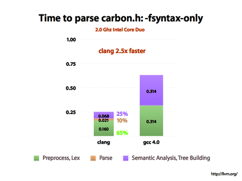
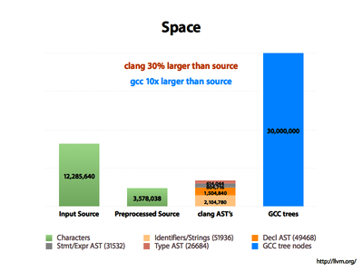
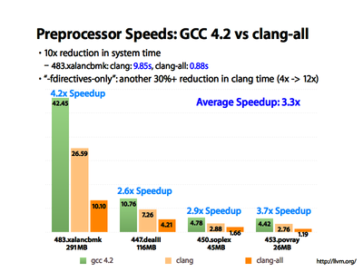
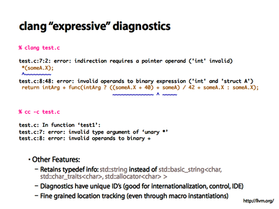

Clang - Features and Goals
This page describes the features and goals of Clang in more detail and gives a more broad explanation about what we mean. These features are:
End-User Features:
Driving Goals and Internal Design:
- A real-world, production quality compiler
- A simple and hackable code base
- A single unified parser for C, Objective C, C++, and Objective C++
- Conformance with C/C++/ObjC and their variants
End-User Features
High Performance and Low Memory Use
A major focus of our work on clang is to make it fast, light and scalable. The library-based architecture of clang makes it straight-forward to time and profile the cost of each layer of the stack, and the driver has a number of options for performance analysis.
While there is still much that can be done, we find that the clang front-end is significantly quicker than gcc and uses less memory For example, when compiling "Carbon.h" on Mac OS/X, we see that clang is 2.5x faster than GCC:
Carbon.h is a monster: it transitively includes 558 files, 12.3M of code, declares 10000 functions, has 2000 struct definitions, 8000 fields, 20000 enum constants, etc (see slide 25+ of the clang talk for more information). It is also #include'd into almost every C file in a GUI app on the Mac, so its compile time is very important.
From the slide above, you can see that we can measure the time to preprocess the file independently from the time to parse it, and independently from the time to build the ASTs for the code. GCC doesn't provide a way to measure the parser without AST building (it only provides -fsyntax-only). In our measurements, we find that clang's preprocessor is consistently 40% faster than GCCs, and the parser + AST builder is ~4x faster than GCC's. If you have sources that do not depend as heavily on the preprocessor (or if you use Precompiled Headers) you may see a much bigger speedup from clang.
Compile time performance is important, but when using clang as an API, often memory use is even moreso: the less memory the code takes the more code you can fit into memory at a time (useful for whole program analysis tools, for example).
Here we see a huge advantage of clang: its ASTs take 5x less memory than GCC's syntax trees, despite the fact that clang's ASTs capture far more source-level information than GCC's trees do. This feat is accomplished through the use of carefully designed APIs and efficient representations.
In addition to being efficient when pitted head-to-head against GCC in batch mode, clang is built with a library based architecture that makes it relatively easy to adapt it and build new tools with it. This means that it is often possible to apply out-of-the-box thinking and novel techniques to improve compilation in various ways.
This slide shows how the clang preprocessor can be used to make "distcc" parallelization 3x more scalable than when using the GCC preprocessor. "distcc" quickly bottlenecks on the preprocessor running on the central driver machine, so a fast preprocessor is very useful. Comparing the first two bars of each group shows how a ~40% faster preprocessor can reduce preprocessing time of these large C++ apps by about 40% (shocking!).
The third bar on the slide is the interesting part: it shows how trivial caching of file system accesses across invocations of the preprocessor allows clang to reduce time spent in the kernel by 10x, making distcc over 3x more scalable. This is obviously just one simple hack, doing more interesting things (like caching tokens across preprocessed files) would yield another substantial speedup.
The clean framework-based design of clang means that many things are possible that would be very difficult in other systems, for example incremental compilation, multithreading, intelligent caching, etc. We are only starting to tap the full potential of the clang design.
Expressive Diagnostics
Clang is designed to efficiently capture range information for expressions and statements, which allows it to emit very useful and detailed diagnostic information (e.g. warnings and errors) when a problem is detected.
For example, this slide compares the diagnostics emitted by clang (top) to the diagnostics emitted by GCC (middle) for a simple example:
As you can see, clang goes beyond tracking just column number information: it is able to highlight the subexpressions involved in a problem, making it much easier to understand the source of the problem in many cases. For example, in the first problem, it tells you why the operand is invalid (it requires a pointer) and what type it really is.
In the second error, you can see how clang uses column number information to identify exactly which "+" out of the four on that line is causing the problem. Further, it highlights the subexpressions involved, which can be very useful when a complex subexpression that relies on tricky precedence rules.
The example doesn't show it, but clang works very hard to retain typedef information, ensuring that diagnostics print the user types, not the fully expanded (and often huge) types. This is clearly important for C++ code (tell me about "std::string", not about "std::basic_string<char, std::char_traits<char>, std::allocator<char> >"!), but it is also very useful in C code in some cases as well (e.g. "__m128" vs "float __attribute__((__vector_size__(16)))").
GCC Compatibility
GCC is currently the defacto-standard open source compiler today, and it routinely compiles a huge volume of code. GCC supports a huge number of extensions and features (many of which are undocumented) and a lot of code and header files depend on these features in order to build.
While it would be nice to be able to ignore these extensions and focus on implementing the language standards to the letter, pragmatics force us to support the GCC extensions that see the most use. Many users just want their code to compile, they don't care to argue about whether it is pedantically C99 or not.
As mentioned above, all extensions are explicitly recognized as such and marked with extension diagnostics, which can be mapped to warnings, errors, or just ignored.
Driving Goals and Internal Design
A real-world, production quality compiler
Clang is designed and built by experienced commercial compiler developers who are increasingly frustrated with the problems that existing open source compilers have. Clang is carefully and thoughtfully designed and built to provide the foundation of a whole new generation of C/C++/Objective C development tools, and we intend for it to be commercial quality.
Being a production quality compiler means many things: it means being high performance, being solid and (relatively) bug free, and it means eventually being used and depended on by a broad range of people. While we are still in the early development stages, we strongly believe that this will become a reality.
A simple and hackable code base
Our goal is to make it possible for anyone with a basic understanding of compilers and working knowledge of the C/C++/ObjC languages to understand and extend the clang source base. A large part of this falls out of our decision to make the AST mirror the languages as closely as possible: you have your friendly if statement, for statement, parenthesis expression, structs, unions, etc, all represented in a simple and explicit way.
In addition to a simple design, we work to make the source base approachable by commenting it well, including citations of the language standards where appropriate, and designing the code for simplicity. Beyond that, clang offers a set of AST dumpers, printers, and visualizers that make it easy to put code in and see how it is represented.
A single unified parser for C, Objective C, C++, and Objective C++
Clang is the "C Language Family Front-end", which means we intend to support the most popular members of the C family. We are convinced that the right parsing technology for this class of languages is a hand-built recursive-descent parser. Because it is plain C++ code, recursive descent makes it very easy for new developers to understand the code, it easily supports ad-hoc rules and other strange hacks required by C/C++, and makes it straight-forward to implement excellent diagnostics and error recovery.
We believe that implementing C/C++/ObjC in a single unified parser makes the end result easier to maintain and evolve than maintaining a separate C and C++ parser which must be bugfixed and maintained independently of each other.
Conformance with C/C++/ObjC and their variants
When you start work on implementing a language, you find out that there is a huge gap between how the language works and how most people understand it to work. This gap is the difference between a normal programmer and a (scary? super-natural?) "language lawyer", who knows the ins and outs of the language and can grok standardese with ease.
In practice, being conformant with the languages means that we aim to support the full language, including the dark and dusty corners (like trigraphs, preprocessor arcana, C99 VLAs, etc). Where we support extensions above and beyond what the standard officially allows, we make an effort to explicitly call this out in the code and emit warnings about it (which are disabled by default, but can optionally be mapped to either warnings or errors), allowing you to use clang in "strict" mode if you desire.
We also intend to support "dialects" of these languages, such as C89, K&R C, C++'03, Objective-C 2, etc.
Library based architecture
A major design concept for the LLVM front-end involves using a library based architecture. In this library based architecture, various parts of the front-end can be cleanly divided into separate libraries which can then be mixed up for different needs and uses. In addition, the library based approach makes it much easier for new developers to get involved and extend LLVM to do new and unique things. In the words of Chris,"The world needs better compiler tools, tools which are built as libraries. This design point allows reuse of the tools in new and novel ways. However, building the tools as libraries isn't enough: they must have clean APIs, be as decoupled from each other as possible, and be easy to modify/extend. This requires clean layering, decent design, and keeping the libraries independent of any specific client."Currently, the LLVM front-end is divided into the following libraries:
- libsupport - Basic support library, reused from LLVM.
- libsystem - System abstraction library, reused from LLVM.
- libbasic - Diagnostics, SourceLocations, SourceBuffer abstraction, file system caching for input source files. (depends on above libraries)
- libast - Provides classes to represent the C AST, the C type system, builtin functions, and various helpers for analyzing and manipulating the AST (visitors, pretty printers, etc). (depends on above libraries)
- liblex - C/C++/ObjC lexing and preprocessing, identifier hash table, pragma handling, tokens, and macros. (depends on above libraries)
- libparse - Parsing and local semantic analysis. This library invokes coarse-grained 'Actions' provided by the client to do stuff (e.g. libsema builds ASTs). (depends on above libraries)
- libsema - Provides a set of parser actions to build a standardized AST for programs. AST's are 'streamed' out a top-level declaration at a time, allowing clients to use decl-at-a-time processing, build up entire translation units, or even build 'whole program' ASTs depending on how they use the APIs. (depends on libast and libparse)
- libcodegen - Lower the AST to LLVM IR for optimization & codegen. (depends on libast)
- librewrite - Editing of text buffers, depends on libast.
- libanalysis - Static analysis support, depends on libast.
- clang - An example driver, client of the libraries at various levels. (depends on above libraries, and LLVM VMCore)